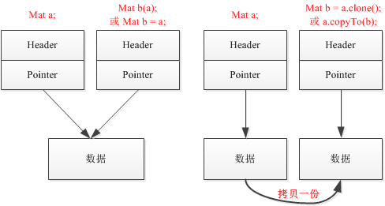
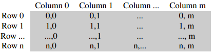
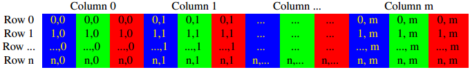
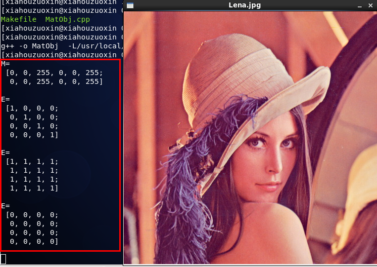

/*
* FileName : MatObj.cpp
* Author : xiahouzuoxin @163.com
* Version : v1.0
* Date : Thu 15 May 2014 09:12:45 PM CST
* Brief :
*
* Copyright (C) MICL,USTB
*/
#include <cv.h>
#include <highgui.h>
#include <iostream>
using namespace std;
using namespace cv;
int main(void)
{
/*
* Create Mat
*/
Mat M(2,2,CV_8UC3, Scalar(0,0,255));
cout << "M=" << endl << " " << M << endl << endl;
/*
* Matlab style
*/
Mat E = Mat::eye(4,4,CV_64F);
cout << "E=" << endl << " " << E << endl << endl;
E = Mat::ones(4,4,CV_64F);
cout << "E=" << endl << " " << E << endl << endl;
E = Mat::zeros(4,4,CV_64F);
cout << "E=" << endl << " " << E << endl << endl;
/*
* Convert IplImage to Mat
*/
IplImage *img = cvLoadImage("../test_imgs/Lena.jpg");
Mat L(img);
namedWindow("Lena.jpg", CV_WINDOW_AUTOSIZE);
imshow("Lena.jpg", L);
waitKey(0);
/*
* Init Mat with separated data
*/
Mat C = (Mat_<int>(3,3) << 0,1,2,3,4,5,6,7,8);
cout << "C=" << endl << " " << C << endl << endl;
return 0;
}Mat是OpenCV最基本的数据结构，Mat即矩阵（Matrix）的缩写，Mat数据结构主要包含2部分：Header和Pointer。Header中主要包含矩阵的大小，存储方式，存储地址等信息；Pointer中存储指向像素值的指针。我们在读取图片的时候就是将图片定义为Mat类型，其重载的构造函数一大堆，
class CV_EXPORTS Mat
{
public:
//! default constructor
Mat();
//! constructs 2D matrix of the specified size and type
// (_type is CV_8UC1, CV_64FC3, CV_32SC(12) etc.)
Mat(int _rows, int _cols, int _type);
Mat(Size _size, int _type);
//! constucts 2D matrix and fills it with the specified value _s.
Mat(int _rows, int _cols, int _type, const Scalar& _s);
Mat(Size _size, int _type, const Scalar& _s);
//! constructs n-dimensional matrix
Mat(int _ndims, const int* _sizes, int _type);
Mat(int _ndims, const int* _sizes, int _type, const Scalar& _s);
//! copy constructor
Mat(const Mat& m);
//! constructor for matrix headers pointing to user-allocated data
Mat(int _rows, int _cols, int _type, void* _data, size_t _step=AUTO_STEP);
Mat(Size _size, int _type, void* _data, size_t _step=AUTO_STEP);
Mat(int _ndims, const int* _sizes, int _type, void* _data, const size_t* _steps=0);
//! creates a matrix header for a part of the bigger matrix
Mat(const Mat& m, const Range& rowRange, const Range& colRange=Range::all());
Mat(const Mat& m, const Rect& roi);
Mat(const Mat& m, const Range* ranges);
//! converts old-style CvMat to the new matrix; the data is not copied by default
Mat(const CvMat* m, bool copyData=false);
//! converts old-style CvMatND to the new matrix; the data is not copied by default
Mat(const CvMatND* m, bool copyData=false);
//! converts old-style IplImage to the new matrix; the data is not copied by default
Mat(const IplImage* img, bool copyData=false);
......
}要了解如何初始化Mat结构，就应该了解它的构造函数，比如程序中的第一初始化方式调用额就是
Mat(int _rows, int _cols, int _type, const Scalar& _s);这个构造函数。
IplImage*是C语言操作OpenCV的数据结构，在当时C操纵OpenCV的时候，地位等同于Mat，OpenCV为其提供了一个接口，很方便的直接将IplImage转化为Mat，即使用构造函数
Mat(const IplImage* img, bool copyData=false);上面程序中的第二种方法就是使用的这个构造函数。
关于Mat数据复制：前面说过Mat包括头和数据指针，当使用Mat的构造函数初始化的时候，会将头和数据指针复制（注意：只是指针复制，指针指向的地址不会复制），若要将数据也复制，则必须使用copyTo或clone函数

Mat还有几个常用的成员函数，在之后的文章中将会使用到：
//! returns true iff the matrix data is continuous
// (i.e. when there are no gaps between successive rows).
// similar to CV_IS_MAT_CONT(cvmat->type)
bool isContinuous() const;这了解上面的函数作用前，得了解下OpenCV中存储像素的方法，如下，灰度图（单通道）存储按行列存储，

三通道RGB存储方式如下，每列含有三个通道，

为了加快访问的速度，openCV往往会在内存中将像素数据连续地存储成一行，isContinus()函数的作用就是用于判断是否连续存储成一行。存储成一行有什么好处呢？给定这行的头指针p，则只要使用p++操作就能逐个访问数据。
因此当判断存放在一行的时候，可以通过数据指针++很容易遍历图像像素：
long nRows = M.rows * M.channels(); // channels()也是Mat中一个常用的函数，用于获取通道数（RGB=3，灰度=1）
long nCols = M.cols;
uchar *p = M.data; // 数据指针
if(M.isContinuous())
{
nCols *= nRows;
for (long i=0; i < nCols; i++) {
*p++ = ...; // 像素赋值或读取操作
}
}请注意以上几个常用的Mat成员遍历和函数：
M.row; // 返回图像行数
M.nCols; // 返回图像列数
M.channels(); //返回通道数
M.isContinuous(); // 返回bool类型表示是否连续存储更多关于Mat的信息请参考安装目录下的include/opencv2/core.hpp文件

左边是矩阵的一些操作输出结果，右边的图是通过IplImage *结构读入，转换为Mat后显示结果。